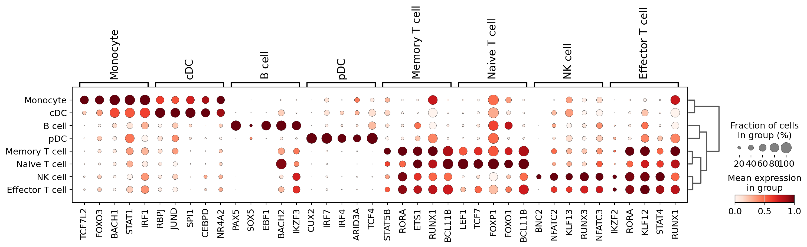
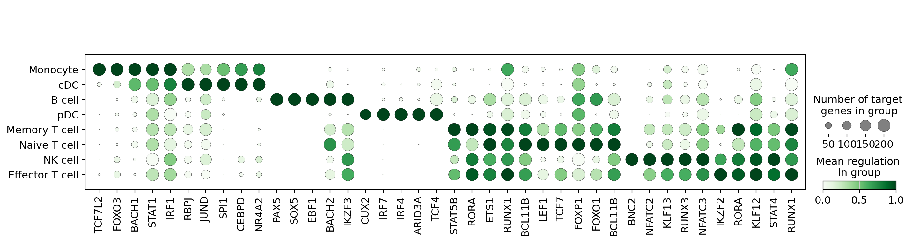

Cell2Net Transcription Factor Activity Analysis#
This tutorial demonstrates how to analyze transcription factor (TF) activity patterns across different PBMC cell types using the regulatory networks generated from Cell2Net model interpretations. By quantifying and visualizing TF activity, we can understand cell-type-specific regulatory programs and identify key transcriptional drivers of immune cell identity.
Overview#
Transcription factor activity analysis transforms the TF attribution scores from Cell2Net models into biologically interpretable activity patterns:
Activity Quantification: Aggregate TF attribution scores across target genes for each cell type
Variance Analysis: Identify TFs with cell-type-specific activity patterns
Activity Visualization: Create dotplots comparing TF activity across immune cell populations
Expression Correlation: Compare predicted TF activity with actual TF gene expression
Biological Significance#
TF activity analysis reveals:
Cell Identity Programs: Which TFs define each immune cell type
Regulatory Specificity: How different cell types use distinct TF combinations
Master Regulators: TFs with broad influence across multiple target genes
Lineage Relationships: Shared regulatory programs between related cell types
This approach bridges the gap between computational predictions and biological understanding of immune cell regulation.
import warnings
warnings.filterwarnings("ignore")
import pandas as pd
import scanpy as sc
import mudata as md
import pandas as pd
import cell2net as cn
md.set_options(pull_on_update=False)
2. Load and Normalize Expression Data#
Load the multiome dataset and perform standard normalization for gene expression analysis:
mdata.h5mu: Multiome object containing single-cell RNA expression, ATAC accessibility, and cell annotations.
Total-count normalization: Scale gene expression to 10,000 total counts per cell
Log transformation: Apply log1p transformation for variance stabilization
This normalization enables comparison of TF gene expression levels across different cell types and provides a baseline for correlating predicted TF activity with actual TF expression.
mdata = md.read_h5mu("./mdata.h5mu")
sc.pp.normalize_total(mdata['rna'])
sc.pp.log1p(mdata['rna'])
3. Load TF-Gene Regulatory Network#
Load the TF-gene regulatory network generated from Cell2Net model interpretations in last step:
tf_to_gene.csv: Attribution-based regulatory relationships from previous tutorial step
Network structure: Contains TF names, target genes, cell types, and attribution scores
Quantitative measures: Mean attribution scores represent regulatory strength
This dataset provides the foundation for computing TF activity by aggregating regulatory impact across all target genes for each transcription factor.
df = pd.read_csv("./05_tf_to_gene/tf_to_gene.csv",
index_col=0)
df
| tf | gene | cell_type_v2 | mean_attr | std_attr | |
|---|---|---|---|---|---|
| 0 | KLF2 | ISG15 | B cell | 1.415844 | 0.468231 |
| 1 | ELF1 | ISG15 | B cell | 0.975179 | 0.298402 |
| 2 | MEF2C | ISG15 | B cell | 0.851608 | 0.448217 |
| 3 | IKZF3 | ISG15 | B cell | 0.699268 | 0.239014 |
| 4 | JUNB | ISG15 | B cell | 0.691353 | 0.323894 |
| ... | ... | ... | ... | ... | ... |
| 75 | ARID3A | CLIC2 | pDC | 0.167850 | 0.062825 |
| 76 | MAX | CLIC2 | pDC | 0.154308 | 0.050194 |
| 77 | CREB3L2 | CLIC2 | pDC | 0.151772 | 0.049553 |
| 78 | MGA | CLIC2 | pDC | 0.150544 | 0.062157 |
| 79 | JUNB | CLIC2 | pDC | 0.141468 | 0.071961 |
154160 rows × 5 columns
4. Compute TF Activity Scores#
Calculate transcription factor activity by aggregating attribution scores across target genes:
Activity Computation Process#
Group by TF and cell type: Organize regulatory relationships by transcription factor and cellular context
Sum attributions: Aggregate mean attribution scores across all target genes for each TF
Pivot table: Reshape data with TFs as rows and cell types as columns
Fill missing values: Set activity to 0 for TF-cell type combinations without regulatory targets
Biological Interpretation#
High activity scores: TFs with strong regulatory impact across many target genes
Cell-type specificity: Different activity patterns reveal regulatory specialization
Regulatory breadth: TFs with activity across multiple cell types may be master regulators
Context dependence: Same TF can have different activity levels in different immune cells
The resulting activity matrix provides a quantitative, cell-type-resolved view of transcriptional regulation learned by Cell2Net models.
# get average regulation of each tf within cell types
df_act = df.groupby(['tf', 'cell_type_v2'])['mean_attr'].sum().reset_index()
df_act = df_act.pivot_table(index='tf', columns='cell_type_v2', values='mean_attr')
df_act = df_act.fillna(0)
df_act = df_act.rename_axis(None, axis=0)
df_act = df_act.rename_axis(None, axis=1)
df_act
| B cell | Effector T cell | Memory T cell | Monocyte | NK cell | Naive T cell | cDC | pDC | |
|---|---|---|---|---|---|---|---|---|
| ARID3A | 0.848500 | 0.000000 | 0.000000 | 4.606098 | 0.000000 | 0.023151 | 1.556543 | 72.943250 |
| ARID3B | 0.040328 | 0.358864 | 0.245848 | 0.000000 | 0.391047 | 0.131400 | 0.000000 | 0.071191 |
| ARID5A | 0.000000 | 0.000000 | 0.000000 | 0.000000 | 0.157263 | 0.000000 | 0.124857 | 0.000000 |
| ARNT | 1.845523 | 1.301548 | 1.280509 | 2.056258 | 2.019301 | 1.109258 | 1.659010 | 2.303763 |
| ARNTL | 0.000000 | 3.020990 | 2.020507 | 0.073984 | 7.520797 | 0.000000 | 0.000000 | 0.086325 |
| ... | ... | ... | ... | ... | ... | ... | ... | ... |
| ZNF740 | 0.069531 | 0.072358 | 0.051780 | 0.000000 | 0.069313 | 0.067072 | 0.000000 | 0.000000 |
| ZNF75A | 0.153219 | 0.354103 | 0.134158 | 0.000000 | 0.152452 | 0.683735 | 0.000000 | 0.000000 |
| ZNF76 | 0.038586 | 0.054669 | 0.078891 | 0.063455 | 0.045685 | 0.100084 | 0.041894 | 0.000000 |
| ZNF766 | 0.279524 | 0.000000 | 0.156850 | 0.000000 | 0.045424 | 0.278122 | 0.065266 | 0.000000 |
| ZNF770 | 0.000000 | 0.027890 | 0.034100 | 0.000000 | 0.027462 | 0.000000 | 0.000000 | 0.294247 |
238 rows × 8 columns
5. Analyze TF Activity Variance#
Visualize transcription factor activity variance across cell types to identify the most cell-type-specific regulators:
Variance Analysis#
Activity variance: Measures how much TF activity differs across cell types
Cell-type specificity: High variance indicates specialized regulatory roles
Master regulators: Moderate variance may suggest broad regulatory influence
Top variable TFs: Display the 5 most cell-type-specific transcription factors
Biological Interpretation#
High variance TFs: Likely define cell identity and lineage-specific programs
Consistent activity: May represent housekeeping or broadly required regulatory functions
Regulatory specialization: Cell-type-specific TFs drive functional diversification
This analysis helps prioritize transcription factors for detailed biological investigation and experimental validation.
cn.pl.tf_activity_variance(df_act, n_labels=5)
{kind=link}
6. Select Top Variable TFs for Visualization#
Identify the most cell-type-specific transcription factors for detailed visualization:
Selection Criteria#
n_top_tfs=5: Select top 5 TFs for each cell type based on activity levels
var_cutoff=0.3: Require minimum variance across cell types to ensure specificity
Cell-type resolution: Identify key regulators for each immune cell population
Output Structure#
The var_names dictionary organizes selected TFs by cell type, enabling focused visualization of:
Cell identity TFs: Key regulators that define each immune cell type
Regulatory programs: TF combinations that drive cell-type-specific functions
Lineage markers: Transcription factors associated with immune cell differentiation
This curated selection focuses subsequent analysis on the most biologically relevant and cell-type-specific regulatory relationships.
df_top_tfs = cn.ip.get_top_tfs(df_act, n_top_tfs=5, var_cutoff=0.3)
var_names = df_top_tfs.to_dict(orient="list")
Inspect Selected TFs by Cell Type#
Display the selected transcription factors organized by immune cell type. This curated list represents the most cell-type-specific and highly active TFs identified from Cell2Net regulatory network analysis, providing focused targets for biological interpretation and experimental validation.
var_names
{'B cell': ['PAX5', 'SOX5', 'EBF1', 'BACH2', 'IKZF3'],
'Effector T cell': ['IKZF2', 'RORA', 'KLF12', 'STAT4', 'RUNX1'],
'Memory T cell': ['STAT5B', 'RORA', 'ETS1', 'RUNX1', 'BCL11B'],
'Monocyte': ['TCF7L2', 'FOXO3', 'BACH1', 'STAT1', 'IRF1'],
'NK cell': ['BNC2', 'NFATC2', 'KLF13', 'RUNX3', 'NFATC3'],
'Naive T cell': ['LEF1', 'TCF7', 'FOXP1', 'FOXO1', 'BCL11B'],
'cDC': ['RBPJ', 'JUND', 'SPI1', 'CEBPD', 'NR4A2'],
'pDC': ['CUX2', 'IRF7', 'IRF4', 'ARID3A', 'TCF4']}
7. Visualize TF Gene Expression#
Create a dotplot showing actual transcription factor gene expression across PBMC cell types:
Visualization Features#
Dotplot format: Dot size represents expression level, color represents average expression
Standard scaling: Normalize expression values across cell types for comparison
Dendrogram: Hierarchical clustering reveals cell type relationships
Gene organization: TFs grouped by cell type for systematic comparison
Biological Context#
This expression analysis provides a baseline for comparing:
TF availability: Whether TFs are expressed in cells where they show predicted activity
Expression vs. activity: How TF gene expression correlates with regulatory activity
Cell-type patterns: Which cell types express specific lineage-determining TFs
Regulatory potential: High expression may enable strong regulatory impact
The expression patterns help validate Cell2Net predictions and identify cases where post-transcriptional regulation may modulate TF activity.
sc.pl.dotplot(mdata['rna'], groupby="cell_type_v2",
var_names=var_names,
standard_scale='var', dendrogram=True, swap_axes=False,
save="tf_expression.pdf")
WARNING: dendrogram data not found (using key=dendrogram_cell_type_v2). Running `sc.tl.dendrogram` with default parameters. For fine tuning it is recommended to run `sc.tl.dendrogram` independently.
WARNING: saving figure to file figures/dotplot_tf_expression.pdf
{kind=link}

8. Visualize TF Regulatory Activity#
Create a specialized dotplot showing Cell2Net-predicted transcription factor regulatory activity:
Activity Visualization Features#
Custom TF dotplot: Specialized visualization for regulatory activity data
Green colormap: Intuitive color scheme for activity levels
Cell type ordering: Organized by immune cell lineage relationships
Standard scaling: Normalized activity scores for cross-TF comparison
Target filtering: Focus on TFs with 0-200 target genes for interpretability
Activity vs. Expression Comparison#
This activity plot complements the expression analysis by showing:
Regulatory impact: How strongly TFs regulate their target genes
Cell-type specificity: Where each TF exerts its strongest regulatory influence
Functional activity: Regulatory strength independent of expression level
Network-derived insights: Activity patterns learned from multiome data integration
Biological Interpretation#
High activity: TFs with strong regulatory control in specific cell types
Activity patterns: Cell-type-specific regulatory programs
Master regulators: TFs with broad activity across multiple cell types
Regulatory modules: Co-active TFs that may work together in regulatory complexes
The comparison between expression and activity patterns reveals the complex relationship between TF availability and regulatory function in immune cells.
cn.pl.tf_dotplot(df,
group_col="cell_type_v2",
activity_col="mean_attr",
var_names=var_names, cmap="Greens",
categories_order=['Monocyte', 'cDC', 'B cell', 'pDC', 'Memory T cell', 'Naive T cell',
'NK cell', 'Effector T cell'],
standard_scale="var", n_targets_min=0, n_targets_max=200,
save="tf_activity.pdf")
WARNING: saving figure to file figures/dotplot_tf_activity.pdf
{kind=link}
